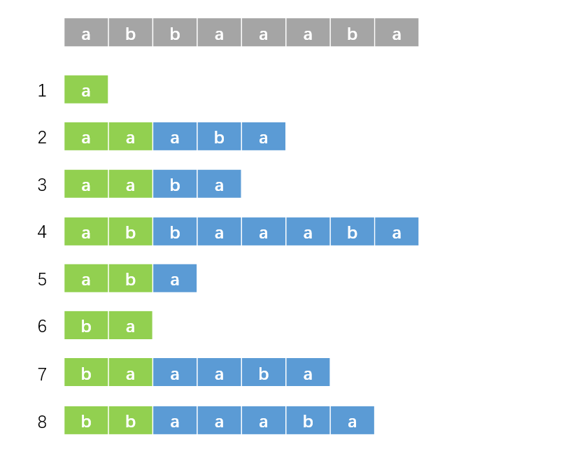

后缀数组
前言¶
后缀数组板子一遍过了，开心。
这篇学习笔记整体框架上与 OI-Wiki 相似，但保证本文章大部分原创
前置知识：基数排序、倍增。
记号与约定¶
字符串即为 \(s\)。
记 "后缀 \(i\)" 表示从 \(i\) 开始的后缀，即 \(s[i\dots n]\)，它代表后缀的编号。
记 \(sa[i]\) 表示排名为 \(i\) 的后缀的编号，\(rk[i]\) 表示后缀 \(i\) 的排名。显然有 \(sa[rk[i]] = rk[sa[i]] = i\)。
如果以 \(a[i]\) 表示一个数组，那么这意味着会出现与该数组有关的嵌套（比如 \(sa[rk[i]]\)）。如果以 \(a_i\) 表示一个数组，那么意味着它的表示比较简单且不会出现嵌套。严格来说，不应该使用前者来表示一个数组，但为了方便读者阅读本文使用了该方式，我尽量做到能用后者就用后者。
求法¶
\(O(n^2\log n)\) 做法¶
暴力对每个后缀进行排序，每次比较的复杂度为 \(O(n)\)，排序复杂度为 \(O(n\log n)\)，总复杂度 \(O(n^2\log n)\)。
\(O(n \log^2{n})\) 做法¶
对于字符串 \(s\) 的所有后缀，它们有大量重复部分，而直接排序就会进行大量重复比较，不如换个角度入手。
我们先从一组数据入手。对于 \(s = \texttt{abbaaaba}\)，我们先以每个后缀第一个字符为第一关键字，第二个字符为第二关键字进行排序，其实也就是对于每个后缀的前两个字符进行排序，结果如下：

根据上面的定义，绿色部分的排名即为 \(rk\) 数组。观察这些后缀，我们现在知道绿色部分的排名。而由后缀的性质，蓝色部分其实也是后缀，那么其实我们也知道下图中黄色部分的排名：

那么我们使用绿色部分的排名（即原排名，\(rk\) 数组）为第一关键字，黄色部分的排名（即对于后缀 \(i\)，第一个图中的蓝色部分是后缀 \(i + 2\)，那么黄色部分的排名即为后缀 \(i + 2\) 的原排名，即 \(rk[i + 2]\)）为第二关键字，进行排序，结果如下：

很好，现在绿色部分（已排序部分）的长度由 \(2\) 变为了 \(4\)。我们接下来再选取长度为 \(4\) 的黄色部分，这样，我们就成功对后缀的前 \(8\) 个字符排序了。以此类推，我们每次都倍增排序长度，并且重复以上操作，那么我们就可以在 \(O(n \log^2{n})\) 的复杂度内解决掉这个问题了（排序 \(O(n\log n)\)，倍增 \(O(\log n)\)）。
形式化的解法
设需要排序长度为 \(w\)。
对于后缀 \(i\)，我们知道按它的第 \(1\) 个字符到第 \(w/2\) 个字符排序的排名。对于后缀 \(i + w/2\) 也是如此，这相当于我们知道按后缀 \(i\) 的第 \(w/2 + 1\) 个字符到第 \(w\) 个字符排序的排名。那么我们以 \(rk[i]\) 为第一关键字，\(rk[i+w/2]\) 为第二关键字进行排序即可。
倍增 \(w\)，即 \(w \gets 2 \times w\)。
\(O(n \log{n})\) 做法¶
字符串有一个特点：值域小。也就是说每个位置的取值种类少。这样，我们就可以利用基数排序的思想。
具体地，先按第一个关键字扔进桶里，再按从大到小按第二关键字遍历桶即可。代码中的第二关键字进行了离散化，它代表第二关键字的排名。代码如下：
void f_sort() {
for (int i = 1; i <= m; i++) b[i] = 0;
for (int i = 1; i <= n; i++) b[rk[i]]++;
for (int i = 1; i <= m; i++) b[i] += b[i - 1];
for (int i = n; i >= 1; i--) sa[b[rk[tp[i]]]--] = tp[i];
}
可以看到，这样排序的复杂度是 \(O(n)\)。我们成功地将总复杂度优化为 \(O(n\log n)\)。
我们求出 \(sa\) 数组了之后，不能直接用 \(rk[sa[i]] = i\) 给 \(rk\) 赋值，这是因为有可能有些后缀的第一二关键字都相同，那么它们的排名也相同，这需要特判一下。
容易观察到第二关键字是由第一关键字平移得到，那么我们就可以 \(O(n)\) 求第二关键字。而且第二关键字我们只需要排名，可以进行一点小优化。具体实现见代码。
完整代码
#include <bits/stdc++.h>
using namespace std;
const int N = 1e6 + 10;
int n, m;
int sa[N], rk[N];
int b[N], tp[N];
char c[N];
void f_sort() {
for (int i = 1; i <= m; i++) b[i] = 0;
for (int i = 1; i <= n; i++) b[rk[i]]++;
for (int i = 1; i <= m; i++) b[i] += b[i - 1];
for (int i = n; i >= 1; i--) sa[b[rk[tp[i]]]--] = tp[i];
}
void g_sa() {
for (int i = 1; i <= n; i++) rk[i] = c[i], tp[i] = i;
f_sort();
int p = 0;
for (int w = 1; w <= n; w <<= 1) {
if (p >= n) break;
p = 0;
for (int i = n - w + 1; i <= n; i++) tp[++p] = i;
for (int i = 1; i <= n; i++) {
if (sa[i] > w) tp[++p] = sa[i] - w;
}
f_sort(), swap(rk, tp), rk[sa[1]] = p = 1;
for (int i = 2; i <= n; i++) {
int sl = sa[i - 1], sr = sa[i];
if (tp[sl] == tp[sr] && tp[sl + w] == tp[sr + w]) {
rk[sa[i]] = p;
} else rk[sa[i]] = ++p;
}
m = p;
}
}
int main() {
scanf("%s", c + 1);
n = strlen(c + 1), m = 127;
g_sa();
for (int i = 1; i <= n; i++) {
printf("%d ", sa[i]);
}
return 0;
}
\(\text{Height}\) 数组¶
这部分主要讲解 \(\text{Height}\) 数组，记为 \(ht[i]\)。
最长公共前缀¶
记 \(\text{suf}(i)\) 表示后缀 \(i\)。
对于字符串 \(S\) 和 \(T\)，定义其最长公共前缀 \(\text{LCP}(S,T)\) 为最大的 \(k(k \leq \min\{\lvert S \rvert,\lvert T \rvert\})\)，使得对于任意 \(i(1 \leq i \leq k)\)，有 \(S_i = T_i\)。
记 \(\text{lcp}(i, j)\) 为后缀 \(sa[i]\) 与后缀 \(sa[j]\) 的最长公共前缀的长度。
容易知道 \(\text{lcp}(i, j) = \text{LCP}(\text{suf}(sa[i]),\text{suf}(sa[j]))\)
\(\text{LCP Lemma}\)¶
对任意 \(1 \leq i < j < k \leq n\)，有
证明
设 \(p=\min\{\text{lcp}(i,j),\text{lcp}(j,k)\}\)，则有 \(\text{lcp}(i,j)\geq p,\text{lcp}(i,j)\geq p\)。
设 \(\text{suf}(sa[i])=u,\text{suf}(sa[j])=v,\text{suf}(sa[k])=w\)。
所以 \(u\) 和 \(v\) 的前 \(p\) 个字符相等，\(v\) 和 \(w\) 的前 \(p\) 个字符相等。所以 \(u\) 和 \(w\) 的前 \(p\) 个字符相等，即 \(\text{lcp}(i,k)\geq p\)，设其为 \(q\)，则 \(q \geq p\)。
假设 \(q > p\)，即 \(q \geq p + 1\)，所以 \(u\) 和 \(w\) 的前 \(p + 1\) 个字符相等。记上述性质为性质 X。
又因为 \(p=\min\{\text{lcp}(i,j),\text{lcp}(j,k)\}\)，所以 \(u[p+1]\neq v[p+1]\) 或 \(v[p+1]\neq w[p+1]\)，且 \(u[p+1] \leq v[p+1] \leq w[p+1]\)。
但又由性质 X，\(u[p+1]=w[p+1]\)，即 \(u[p+1] = v[p+1] = w[p+1]\)，矛盾，故 \(q \leq p\)。
综上所述，有 \(q \geq p\)，且 \(q \leq p\)，则 \(q = p\)，所以 \(\text{lcp}(i,k) = p\)，即 \(\text{lcp}(i,k) = \min\{\text{lcp}(i,j),\text{lcp}(j,k)\}\)。
证毕。
\(\text{LCP Theorem}\)¶
设 \(i < j\)，有
证明
令 \(j=i+t\)，原命题等价于
对 \(t\) 使用数学归纳法，当 \(t=1\) 或 \(t=2\) 时显然成立。
由 \(\text{LCP Lemma}\)，有
由归纳假设，有
即
即
证毕。
\(\text{LCP Corollary}\)¶
对于 \(i \leq j < k\)，有
利用 \(\text{LCP Theorem}\)，证明显然。
基本定义¶
有定义
其中 \(ht[1] = 0\)。
定义数组 \(H[i]\)，有 \(H[i] = ht[rk[i]]\)，则有 \(ht[i] = H[sa[i]]\)。
一个重要引理¶
有如下引理
证明
若 \(H[i] \leq 1\)，引理显然成立，下面我们讨论 \(H[i] > 1\) 的情况。
首先，显然有 \(\text{LCP}(\text{suf}(i+1),\text{suf}(j+1)) = \text{LCP}(\text{suf}(i),\text{suf}(j))-1\)（有 \(\text{LCP}(\text{suf}(i),\text{suf}(j)) \geq 1\)），这相当于把两个后缀都往后移了一个字符，证明略。记上述性质为性质 X。
记 \(j=sa[rk[i-1]-1]\)。显然有 \(\text{suf}(j) < \text{suf}(i-1)\)。
根据 \(H\) 数组的定义，有
由性质 X，有
易知 \(rk[j+1]<rk[i]\)，即 \(rk[j+1] \leq rk[i] - 1\)。这是因为后缀 \(j\) 和 \(i-1\) 的 \(\text{LCP}\) 至少为 \(1\)，且有 \(rk[j] < rk[i-1]\)，去掉第一个字符即可证明。
根据 \(\text{LCP Corollary}\)，有
再根据 \(H\) 数组定义，有
即
证毕。
求法¶
利用上面的引理，我们可以暴力地求出 \(ht\) 数组，代码如下：
void g_hei() {
int k = 0;
for (int i = 1; i <= n; i++) {
if (!rk[i]) continue;
if (k) k--;
while (c[i + k] == c[sa[rk[i] - 1] + k]) ++k;
ht[rk[i]] = k;
}
}
复杂度分析
\(k\) 代表的是 \(\text{LCP}\) 的长度，显然有 \(k \leq n\)。
显然，代码中 k-- 语句最多执行 \(n\) 次，那么 ++k 语句最多执行 \(2 \times n\) 次，这是因为如果多于 \(2 \times n\) 次，必然有一时刻 \(k\) 会大于 \(n\)。
这样，总复杂度为 \(O(n)\)。
注：上述分析仅供初学者理解，严谨的分析需要用到上面的引理，但是我不会，所以具体内容见参考资料里的第二篇文章。
一些应用¶
\(\text{Height}\) 数组应用十分广泛。
子串的最长公共前缀
有
那么有
这样，我们可以将原问题转化为 RMQ 问题，容易使用 ST 表或者线段树维护。
其实这就是 \(\text{LCP Theorem}\)。
不同字串的数目
答案为
证明略。
更多 \(ht\) 数组的应用我们结合例题来分析。
例题¶
P3809 【模板】后缀排序¶
模板题。
P4051 [JSOI2007] 字符加密¶
题意
给你一个长度为 \(n\) 的字符串 \(S\)，你可以把它排成一圈，这样可以生成 \(n\) 个字符串。现在对这 \(n\) 个字符串进行排序，求排序后从小到大每个字符串的末尾组成的字符串。
环形似乎不好处理，但是我们有一种经典方法，将 \(S\) 拼接成 \(SS\)，再求后缀数组即可。
P2852 [USACO06DEC] Milk Patterns G¶
题意
给你一个字符串，求出现至少 \(k\) 次的子串的最大长度。
先求后缀数组和 \(ht\) 数组，这样问题转化为排序后找到连续 \(k\) 个后缀，使得它们的 \(\text{LCP}\) 最大。其实就是在 \(ht\) 数组中，求相邻 \(k-1\) 个值的最小值，最后求这些最小值的最大值，单调队列维护即可。
P4248 [AHOI2013] 差异¶
题意
给定一个长度为 \(n\) 的字符串 \(S\)，令 \(T_i\) 表示它从第 \(i\) 个字符开始的后缀。求
其中，\(\text{len}(a)\) 表示字符串 \(a\) 的长度，\(\text{LCP}(a,b)\) 表示字符串 \(a\) 和字符串 \(b\) 的最长公共前缀。
- \(1 \leq n \leq 5 \times 10^5\)。
原式即为
即为
由 \(ht\) 数组的第一个应用，题目转化为求
其实应该是 \(rk[i]\) 和 \(rk[j]\)，但是它们覆盖了所有的区间，所以可以直接写成上面那样。
考虑每个 \(ht[i]\) 对答案的贡献，设其为 \(f_i\)，设 \(j(j<i)\) 为最大的满足 \(ht[j]\leq ht[i]\) 的数，则 \(ht[i]\) 对 \(j+1\) 到 \(i\) 都有贡献，则有
使用单调栈维护这个东西即可。
代码
#include <bits/stdc++.h>
#define int long long
using namespace std;
const int N = 1e6 + 10;
int n, m, k;
int sa[N], rk[N];
int b[N], tp[N];
int ht[N], ans, f[N];
int stk[N], top;
char c[N];
void f_sort() {
for (int i = 1; i <= m; i++) b[i] = 0;
for (int i = 1; i <= n; i++) b[rk[i]]++;
for (int i = 1; i <= m; i++) b[i] += b[i - 1];
for (int i = n; i >= 1; i--) sa[b[rk[tp[i]]]--] = tp[i];
}
void g_sa() {
for (int i = 1; i <= n; i++) rk[i] = c[i], tp[i] = i;
f_sort();
int p = 0;
for (int w = 1; w <= n; w <<= 1) {
if (p >= n) break;
p = 0;
for (int i = n - w + 1; i <= n; i++) tp[++p] = i;
for (int i = 1; i <= n; i++) {
if (sa[i] > w) tp[++p] = sa[i] - w;
}
f_sort(), swap(rk, tp), p = rk[sa[1]] = 1;
for (int i = 2; i <= n; i++) {
int sl = sa[i - 1], sr = sa[i];
if (tp[sl] == tp[sr] && tp[sl + w] == tp[sr + w]) {
rk[sa[i]] = p;
} else rk[sa[i]] = ++p;
}
m = p;
}
}
void g_hei() {
int k = 0;
for (int i = 1; i <= n; i++) {
if (!rk[i]) continue;
if (k) k--;
while (c[i + k] == c[sa[rk[i] - 1] + k]) ++k;
ht[rk[i]] = k;
}
}
signed main() {
scanf("%s", c + 1);
n = strlen(c + 1), m = 127;
g_sa(), g_hei();
ans += (n * (n + 1) / 2) * (n - 1);
for (int i = 1; i <= n; i++) {
while (top && ht[stk[top]] > ht[i]) top--;
int j = stk[top];
f[i] = f[j] + (i - j) * ht[i];
ans -= 2 * f[i];
stk[++top] = i;
}
cout << ans;
return 0;
}
P7409 SvT¶
题意
给定一个长度为 \(n\) 的字符串 \(S\)。有 \(q\) 次询问，每次询问给定 \(t\) 个数，求去掉重复元素后，这些后缀两两之间的最长公共前缀长度之和。答案对 \(23333333333333333\) 取模。
- \(1 \leq n \leq 5 \times 10 ^ 5\)，\(\sum t \leq 3 \times 10^6\)。
将每次询问的 \(t\) 个数按 \(rk\) 值进行排序，得到 \(p_1 \dots p_t\)。记 \(v_i = \text{LCP}(\text{suf}(p_{i-1}), \text{suf}(p_i))\)，那么由 \(ht\) 数组的第一个应用，有
问题转化为求
与 P4248 [AHOI2013] 差异 一样，使用单调栈维护即可。\(v\) 数组的维护可以使用 ST 表。
代码
#include <bits/stdc++.h>
#define int long long
using namespace std;
const int N = 5e5 + 10;
const int P = 23333333333333333;
const int I = 1e9 + 10;
int n, q, t, s[N];
int sa[N], rk[N], ht[N];
int m, b[N], tp[N];
int lg[N], f[N][22];
int v[N], g[N];
int stk[N], top;
char c[N];
void f_sort() {
for (int i = 1; i <= m; i++) b[i] = 0;
for (int i = 1; i <= n; i++) b[rk[i]]++;
for (int i = 1; i <= m; i++) b[i] += b[i - 1];
for (int i = n; i; i--) sa[b[rk[tp[i]]]--] = tp[i];
}
void g_sa() {
for (int i = 1; i <= n; i++) rk[i] = c[i], tp[i] = i;
f_sort();
int p = 0;
for (int w = 1; w <= n; w <<= 1) {
if (p == n) break;
p = 0;
for (int i = n - w + 1; i <= n; i++) tp[++p] = i;
for (int i = 1; i <= n; i++) {
if (sa[i] > w) tp[++p] = sa[i] - w;
}
f_sort(), swap(rk, tp), rk[sa[1]] = p = 1;
for (int i = 2; i <= n; i++) {
int sl = sa[i - 1], sr = sa[i];
if (tp[sl] == tp[sr] && tp[sl + w] == tp[sr + w]) {
rk[sa[i]] = p;
} else rk[sa[i]] = ++p;
}
m = p;
}
}
void g_hei() {
int k = 0;
for (int i = 1; i <= n; i++) {
if (!rk[i]) continue;
if (k) k--;
while (c[i + k] == c[sa[rk[i] - 1] + k]) ++k;
ht[rk[i]] = k;
}
}
void init() {
memset(f, I, sizeof f);
lg[0] = -1;
for (int i = 1; i <= n; i++) lg[i] = lg[i >> 1] + 1;
for (int i = 1; i <= n; i++) f[i][0] = ht[i];
for (int j = 1; j <= lg[n]; j++) {
for (int i = 1; i + (1 << (j - 1)) <= n; i++) {
f[i][j] = min(f[i][j - 1], f[i + (1 << (j - 1))][j - 1]);
}
}
}
int qry(int l, int r) {
int le = lg[r - l + 1];
return min(f[l][le], f[r - (1 << le) + 1][le]);
}
bool cmp(int x, int y) {
return rk[x] < rk[y];
}
signed main() {
scanf("%lld%lld", &n, &q);
scanf("%s", c + 1);
m = 127;
g_sa(), g_hei(), init();
while (q--) {
scanf("%lld", &t);
for (int i = 1; i <= t; i++) scanf("%lld", &s[i]);
sort(s + 1, s + t + 1);
int tot = unique(s + 1, s + t + 1) - s - 1;
sort(s + 1, s + tot + 1, cmp);
v[1] = 0;
for (int i = 2; i <= tot; i++) v[i] = qry(rk[s[i - 1]] + 1, rk[s[i]]);
top = 0, stk[top] = 0;
for (int i = 1; i <= tot; i++) {
while (top && v[stk[top]] > v[i]) top--;
int j = stk[top];
g[i] = (g[j] + (i - j) * v[i] % P) % P;
stk[++top] = i;
}
int ans = 0;
for (int i = 2; i <= tot; i++) ans = (ans + g[i]) % P;
printf("%lld\n", ans);
}
return 0;
}